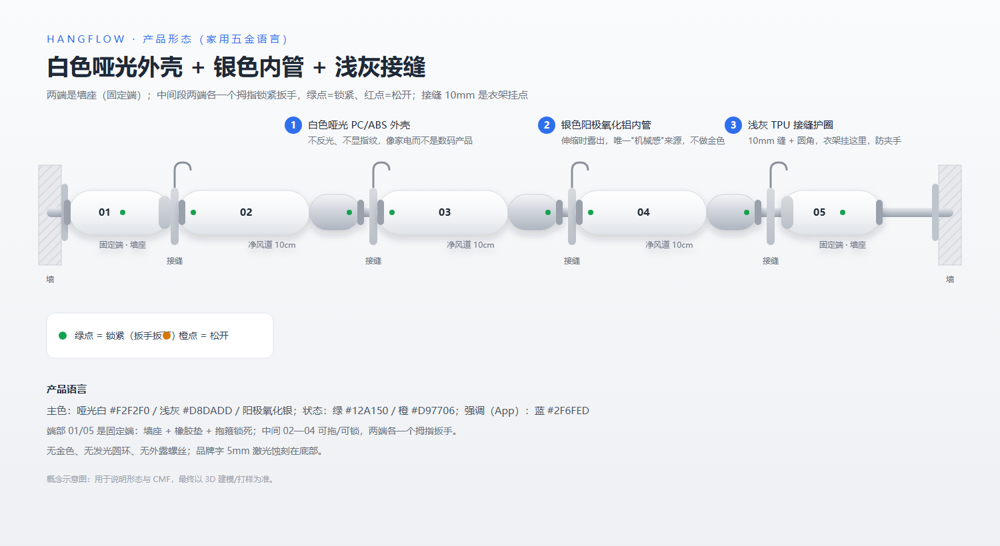

DDC2026 · 地瓜机器人黑客松 · 48H · 2026.12.05—12.07 · 上海张江 方案版本 v2.1 · 2026-11-23 · 所有性能为设计/仿真值，打样后替换实测
不换晾衣杆，让衣服自己让出风道。
在现有晾衣杆上串 K+1 个抱箍式伸缩圆柱；衣架卡在相邻圆柱端头的 10mm 接缝里。圆柱伸长，把两边衣服推开；缩短，让它们靠拢。衣服仍挂在原杆上，调节器不承重。
梅雨季/回南天，衣服挤在杆上，间距只有 3—5cm，中间没有风，贴着的那面干不了，返潮、发臭。手推很烦：够不着、推不齐、湿衣服还重。
需要的其实不是"再买一台烘干机"，而是把现有晾衣杆的间距变成可调的。市面上的电动晾衣架要拆旧装新、单价 800—3000 元；租房用户不能打孔、不能换杆。
墙/边缘 ─[圆柱01]─ 衣架1 ─[圆柱02]─ 衣架2 ─[圆柱03]─ 衣架3 ─[圆柱04]─ 衣架4 ─[圆柱05]─ 墙/边缘
接缝1 接缝2 接缝3 接缝4

| 部件 | 作用 | 关键设计 |
|---|---|---|
| 抱箍两半 | 挂在杆上 | 铰链 + 卡扣；TPU/PTFE 内衬 |
| 锥面收口夹头 | 锁住杆/选择单向伸缩 | 开槽夹头环 + 外套筒；套筒内滑 6mm，12° 锥面径向压紧；保持力 82N（设计） |
| 外套管 | 固定段/电控仓 | Ø40—46mm，PETG/ASA |
| 内套管 | 伸出段 | 同轴，间隙 ≤0.15mm，防转筋 |
| 丝杆 + 螺母 | 旋转→直线 | T8 梯形丝杆，导程 8mm |
| 电机 | 驱动 | N20 6V 30rpm（建议 50rpm 版），额定 ≥0.1N·m |
| 长度传感 | 闭环 | AS5600 装丝杆轴，4096 计数/转 |
| 端头 U 托 | 10mm 接缝 | 圆角、防夹手 |
| 类型 | 范围 | 说明 |
|---|---|---|
| 内部动力段 | 100—220mm | 净风道 10—22cm |
| 内部被动短套 | 40/60/80mm | 4—10cm 窄风道，手动换段 |
| 端部段 | 30—120mm | 外端锚定，内端自由伸缩；行程 90mm |
| 夹头保持力 | 82N | 需求 ≥40N，2.05× |
| 40N 位移 | 0.08mm | 夹头微滑 + 橡胶垫压缩，验收 <0.5mm |
端部 01/05 只锁外端，外端坐标 0/D 固定；内端 30—120mm 自由伸缩，吸收整条链的长度变化。若两端都锁死，等距/收衣没有行程，物理上不成立。
| 项 | 方案 |
|---|---|
| 主控 | ESP32-C3（每单元） |
| 驱动 | DRV8833 / TB6612 |
| 长度 | AS5600（I2C 0x36）+ 固件多圈计数 + NVS（magic+CRC16） |
| 夹持反馈 | 每端 1 个微动（P0 手动推套筒；P1 电动推套筒） |
| 限位 | 上下限位开关双保险 |
| 电源 | 1000mAh 18650 + TP4056 + MT3608；USB-C |
| 状态 | WS2812 单灯 + 按键 |
| 数量 | P0 5 个单元全电动（端部要吸收总长）；Lite 端部被动，约 −¥100 |
安全联锁：两端都松/都锁禁止电机动作；只允许"恰好一端锁"时伸缩；运动中夹持状态变化 50ms 内停；断网 500ms 停；卡死 300ms 判出；超程/低压/急停。
固件：firmware-v2/esp32/，PlatformIO 编译通过（RAM 12.1% / Flash 60.5%），未接真机。
总链长 = ΣL_i + K×10mm
内部段净风道 g_i = L_i
中心距 = L_i + 10mm
外端锚点 0 / D 固定；ΣL + K×10 = D
| 模式 | 行为 |
|---|---|
| 等距 | 内部目标 10—22cm；端部吸收；12cm 示例 [30,120,120,120,30] |
| 加权 | 按湿度重新分配内部段，总长不变 |
| 收衣 | 内部回 100mm，端部回 60mm → [60,100,100,100,60] |
低于 10cm 的 8cm 需要被动短套，自动模式明确拒绝；15/20cm 因端部行程/锚定跨度不足拒绝。
DICT_4X4_50，ID 01—07，边长 30mm。sim-v2，18/18 单测）| 项 | 结果 |
|---|---|
| 规划耗时 | K=4 中位 44µs |
| 日常（12cm→收衣） | 4mm/s 37.0s（超 30s）；7mm/s 24.1s（达标） |
| 调节峰值 | 14N / 0.49A（不锁端 2.44A 且要重标定） |
| 长度闭环 | 上升 12.0s、稳态误差 +0.016mm、超调 0.02mm |
| 反向间隙 | ≤±72µm |
| 堵转 | 295ms |
| 误差预算 | RSS 0.53mm、最坏 0.87mm、100% 在 ±2mm 内 |
| 视觉 | 5 个 ID 全认全 100%、p95 0.30s |
手机网页 → HTTP/WS → RDK X5 中枢（视觉/链模型/规划）
│ MQTT
┌──────┬──────┬──────┬──────┬──────┐
│单元01│单元02│单元03│单元04│单元05│
└──────┴──────┴──────┴──────┴──────┘
hangflow/unit/{id}/cmd {v,seq,op,target_mm,speed,clamp,timeout}；state 10Hz；evt。software_v2/model.py（端点锚定）、protocol.py、mock_hub.py、11 个单测。3 分钟：问题（3—5cm）→ 产品（衣服还挂原杆，圆柱=风道）→ 演示（收拢→等距 10cm→单段 12cm）→ 技术（唯一编码/长度闭环/端点锚定）→ 成本（打样 ¥890，量产 ¥601，售价 899 起）→ 收尾。
现场操作：扫码开网页 → 指 5 个圆柱/4 个接缝 → 收衣 → 一键等距 10cm → 拖单段到 12cm → 指识别/长度 → 急停 → 递手机。
失败话术：卡死保护、网页本地备份、视觉遮挡降级、衣架脱缝是待改边界；不编数据。
| 口径 | 金额（不含 RDK） |
|---|---|
| 工程打样（5 单元 + 中枢配件 + 杆/墙） | ¥890.5 |
| 含 RDK 账面 | ¥1,439.5 |
| 1,000 台量产整机 | ¥601 |
| 纯物料精简打样 | ¥575 |
定价：Lite ¥399 / Pro Core ¥899 / Pro Vision ¥1,599；加购段 ¥149；端部件一对 ¥259。毛利按 1 万台物料口径约 47%，偏乐观；扣渠道售后约 36%。
市场：TAM 约 ¥1,300 亿量级、SAM 约 ¥150 亿、三年 SOM ¥3,000 万—¥1.8 亿（沿用 v1 估算口径，未做新调研）。B 端 2m 杆 10 件：11 个调节器，成本 ¥951，报价 ¥1,899/杆。
| 风险 | 概率/影响 | 处置 |
|---|---|---|
| 夹头摩擦不足/蠕变 | 中/高 | 三种杆面实测；POM 夹头 + 钢锥面备选；复紧维护 |
| 丝杆卡死/不自锁 | 中/中 | 300ms 堵转判据；动态刹车；常闭电磁刹车备选 |
| 端部挂包离墙 <140mm | 中/中 | 现场量杆；Lite 被动端件 |
| 5 个单元 Wi-Fi 拥堵 | 中/中 | RDK 热点 + 固定信道；串行指令 |
| 现场没实物 | 高/高 | app + 仿真 + 视频三套备份；答辩讲清"方案/设计值" |
| 时间不够 | 中/高 | P0 优先：3 件衣服/4 圆柱也能演示核心动作 |
| 项 | 状态 |
|---|---|
| 概念/文档 | ✅ 11 份 v2 文档 |
| App | ✅ 可跑；拖拽/端点约束已修；CDP 验证 |
| 仿真 | ✅ 18/18；6 图 |
| 软件模型/协议/mock | ✅ 11/11 |
| 固件 | ✅ 编译通过；未接真机 |
| 机械 | 🟡 设计 + OpenSCAD 渲染；未打样 |
| 电控 | 🟡 BOM/接线；未打样 |
| Deck | ✅ 10 页 PDF |
| 实物 | ❌ 未打样（赛前任务） |